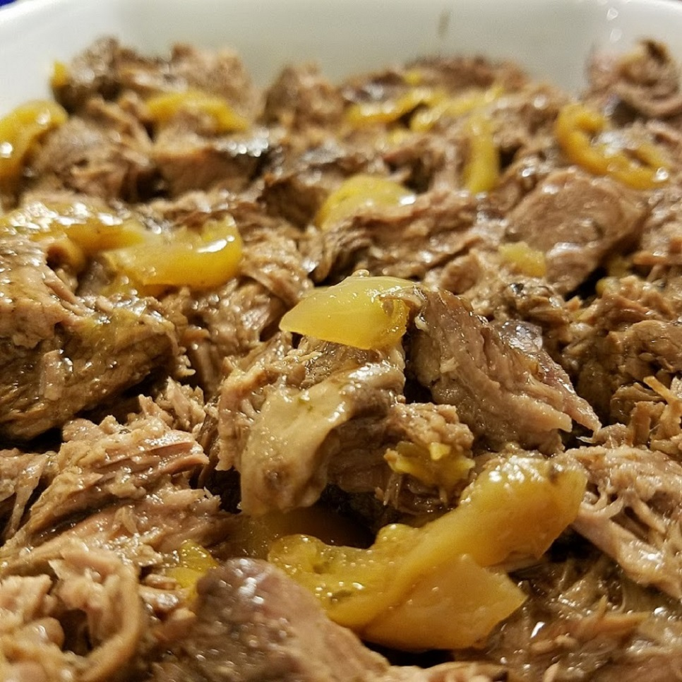

Mississippi Pot Roast

Description
Hailing from the South, this pot roast will make for a warm, homemade dinner anytime.
Ingredients
- 1 (3 pound) chuck roast
- ½ (12 ounce) jar pepperoncini
- ½ (12 ounce) jar pepperoncini juice
- 1 (1 ounce) packet au jus gravy mix
- 1 (0.4 oz) package buttermilk ranch dressing (such as Hidden Valley®)
- salt and ground black pepper to taste
Steps
- Combine chuck roast, pepperoncini, pepperoncini juice, au jus mix, buttermilk ranch dressing, salt, and pepper in a slow cooker. Cook on Low until roast is fork-tender, about 8 hours.
- Pull chuck apart with 2 forks. Cover with aluminum foil to keep warm.